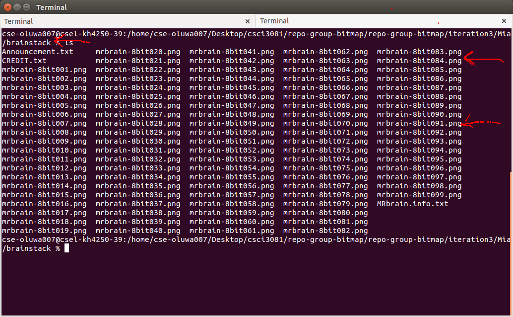
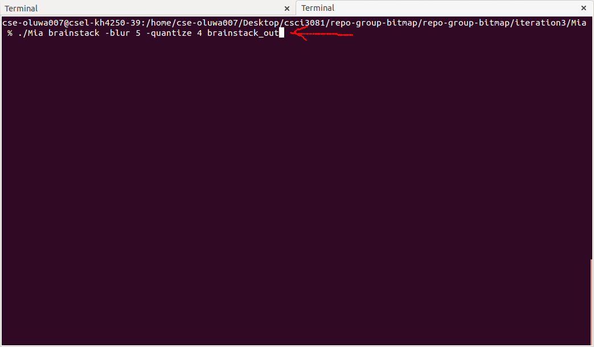
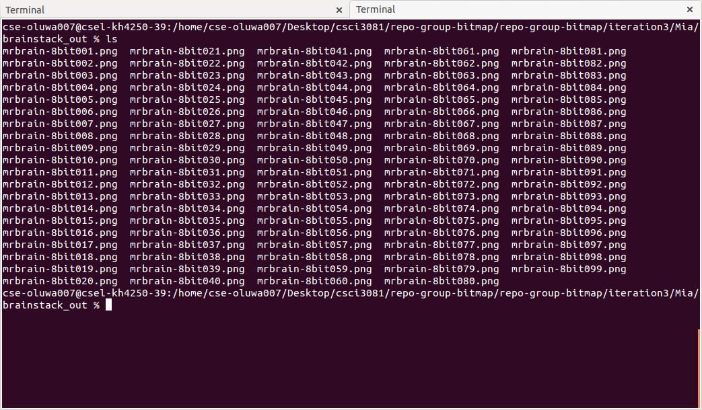
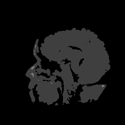
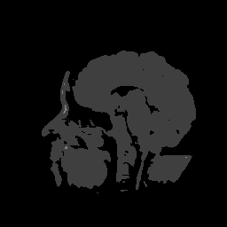
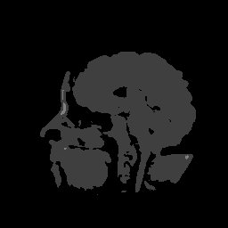
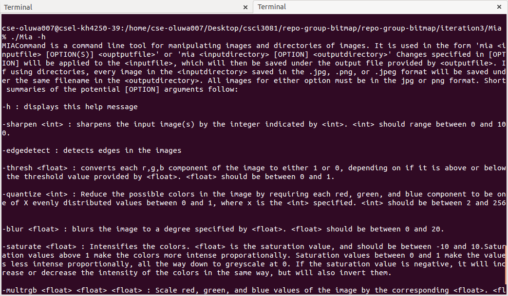

Converting and Segmenting a CT Scan Using Mia
This is a tutorial that will walk through the steps necessary to process a series of CT scans using the MIA command line interface.
For this tutorial, we will assume that you are running Mia in a directory that has a folder called "brainstack/" that contains a series of CT scan images that are saved in the format mrbrain-8bit###.png, where ### are consecutive numbers from 001 to 099.
Terminal with brainstack directory and format name

The MIA command line interface is a powerful tool. Here, we're going to be able to use it to perform a number of changes to our brainstack with one command. For this case, we're going to blur the images slightly (to reduce noise),
quantize the result into 4 bins, and save the images in a new directory.
This will give us quantized versions of the images that represent 4 different tissue types.
Running of Mia command in command line/terminal

Navigate to the terminal where Mia is located, and type "./Mia brainstack -blur 5 -quantize 4 brainstack_out", then press enter. The MIA app will create the directory brainstack_out,
apply the changes to the images, and store them there. The image processing algorithms are somewhat complex, so it will take a few moments. When the program is finished, you can open brainstack_out to inspect the results.
BrainStack_Out directory

Graphical output of image



For a more detailed rundown of the individual processing commands MIA supports, you can type "./Mia -h" in the terminal.
Mia Commandline Help
